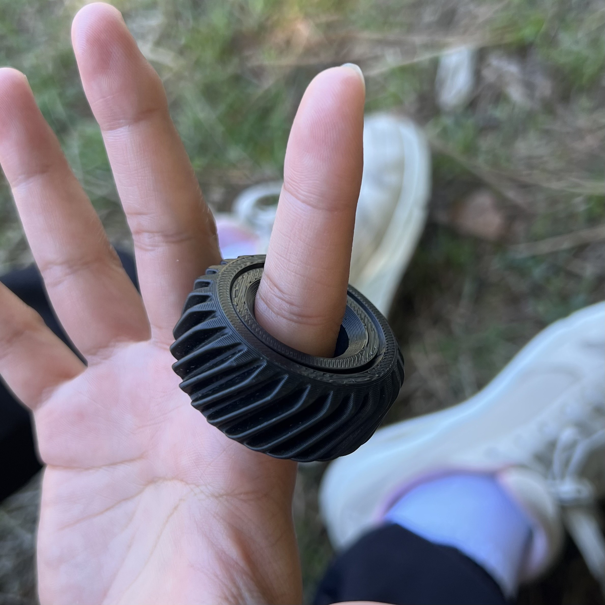
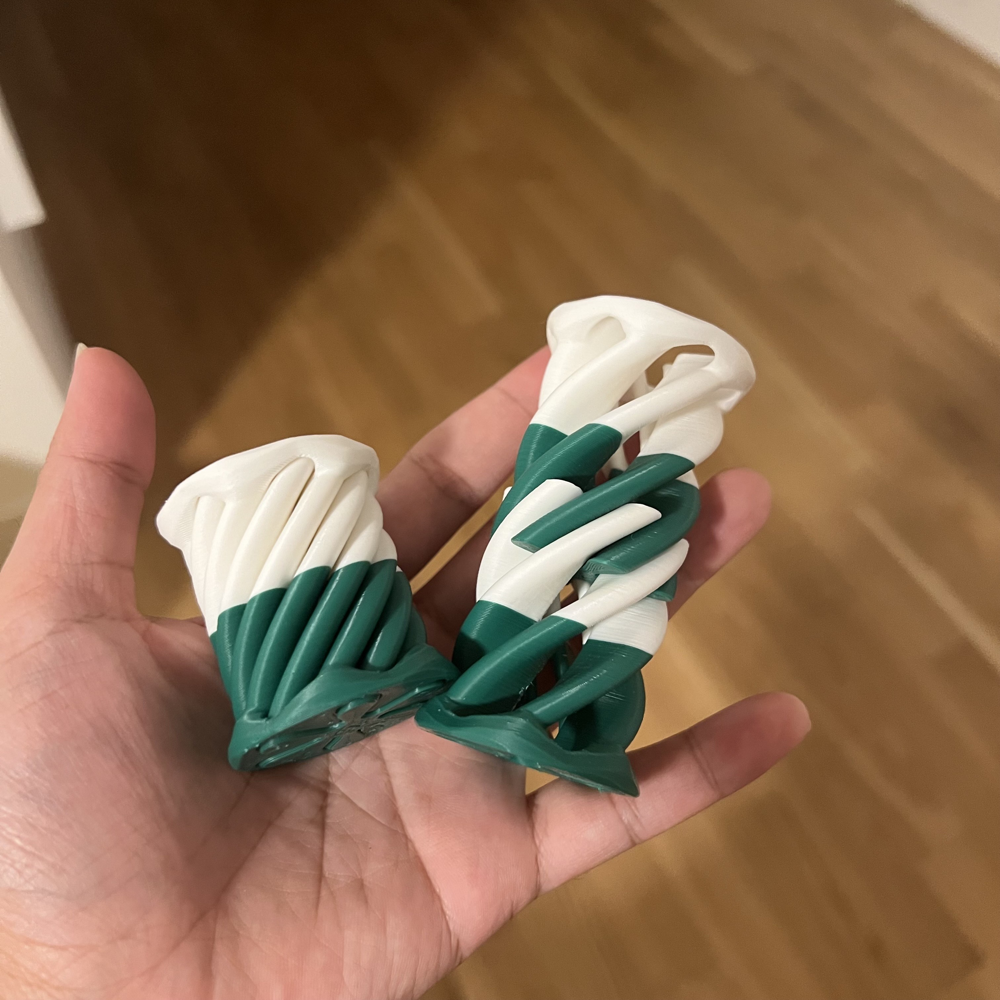

AVAILABLE
NEWLY ADDED
LIMITED
Creative Re-Purposing: From Filament Scraps to Sensory Comfort
Each fidget is unique, born from material that would otherwise be waste. No two are exactly alike – that's part of their charm and effectiveness.

Best for: Stress relief, satisfying clicks, quiet fidgeting
Delivers a satisfying clicky sound and smooth turning motion.

Best for: Calming, meditation, gentle stimulation
The flowing helical grooves guide the fingers in a natural, wave-like rhythm. Their industrial look contrasts with their soothing touch, making them perfect for mindful rolling and quiet moments of grounding.

Best for: Active fidgeters, mechanical satisfaction, focus
When balanced bearings meet thoughtful design, these fidgets spin effortlessly from any angle. Their soft, relaxing sound offers quiet comfort with every turn.

Best for: Focus, curiosity, mesmerizing motion
Two spiraled forms weave through each other in a way that feels impossible yet effortless. The smooth interlocking motion draws the eye and fingers alike, offering a hypnotic distraction that sparks both focus and wonder.
Have something specific in mind? I love a challenge! While I can't guarantee every request is possible (depends on the available materials), I'm always excited to try new designs.
Popular custom requests: